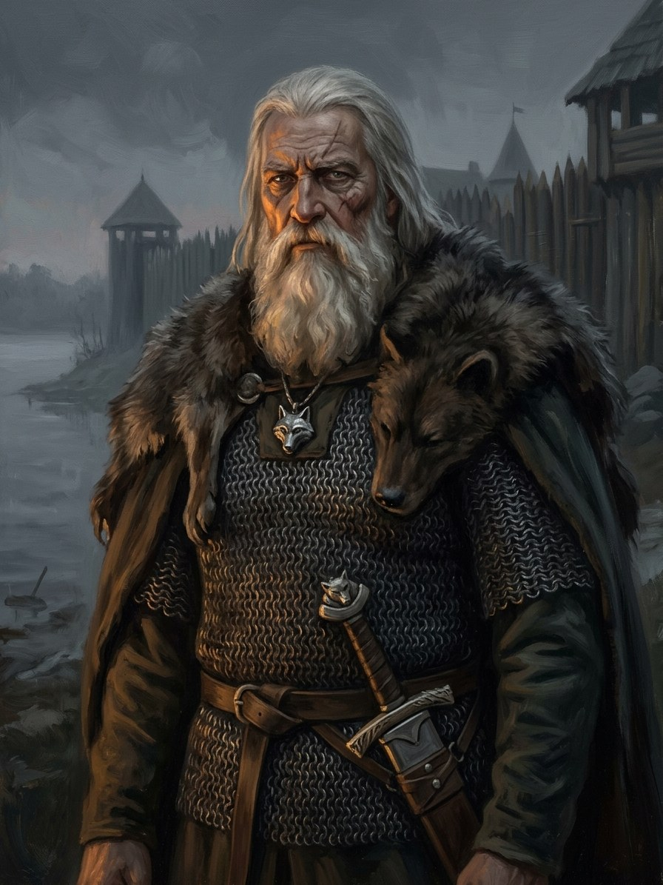

Kęstutis¶
Summary¶
Kęstutis (c. 1297-15 Aug 1382), Duke of Trakai, co-ruler of Lithuania with Algirdas, then with Jogaila. Captured at Lake Ublik on 21 Mar 1361, escaped from Marienburg on 11 Nov 1361; warned in Aug 1381 by Kuno von Liebenstein, took Vilnius in autumn 1381 while Jogaila was away; lured to Jogaila’s camp near Trakai and arrested on 3 Aug 1382, found dead at Krėva on 15 Aug.
Kęstutis

Kęstutis · character¶
Type |
character |
Years |
c. 1297–1382 |
Status |
Historical record |
Note |
Grand Duke of Lithuania and Duke of Trakai (1345–1382); defender of the pagan west, strangled at Krėva. |
Appearance & tells¶
A broad, gnarled man who in Book I looks like an old oak: wide shoulders made for chain mail and for carrying the defence of the whole west, hands thickened by the saddle and scarred white by fifty years of the Order’s war. By 1382 his hair and great beard are white and braided in the old fashion; in 1361, in the Marienburg cell, they are still grey and cropped short, and a scar on the left cheek drags the corner of his eye down (Book VI ch. 17). He dresses in bear fur and wears iron perkūnėliai (thunder-amulets) of Perkūnas, with the silver wolf at his neck and the boar-tusk sword at his side. His seat at Trakai is a plain oak chair worn smooth by his grandfather’s elbows (Book I ch. 1).
He speaks little and bluntly; German only roughly, “as a border duke who dislikes being cheated by languages”. He calls his son “Vyti” in private and nobody else may. His tells are a man who will not take back a move: he never swears what he does not mean (so he refuses baptism in 1361 and the abdication in 1382), and he looks at a danger and walks toward it with his eyes open. After he gives the Beggar his coin and receives a grey stone (Book I ch. 4), he rides to Jogaila’s camp knowing the road.
Want · Need · Lie · Truth¶
Want (external) |
To keep the Order out of Samogitia and the sacred flames lit; to hold the western half of the realm his brother Algirdas left in his care. |
Need (internal) |
To pass on to Vytautas the true price of the Pact (the unspoken Amber Debt) and to learn that a kinsman who has sold the realm cannot be ruled by mercy. |
Lie they believe |
Gediminid blood keeps faith: kin do not kill kin, so Jogaila can be spared and trusted (the family lie that Vytautas inherits as “honour and blood will keep us safe”). |
Truth they learn (or refuse) |
Blood without faith is no shield; he accepts it at Krėva, refusing to abdicate and walking to his death without breaking his word. |
Arc by book¶
Book VI (1341-1377, protagonist). At about forty-four he lights his father Gediminas’s pyre in the reconstructed winter 1341–42 funeral (ch. 1). In winter 1344–45 he helps depose Jaunutis with Algirdas; later, in November 1345, at the Šventaragis fire he swears the Silent Pact and, while Algirdas hesitates, speaks the fire’s unspoken third clause aloud (ch. 4). He sees the 1347 martyrs hanged (ch. 6), loses his brother Narimantas at Strėva (2 Feb 1348, ch. 7), and pays the first Amber Debt (ch. 8). He takes Birutė as his wife c. 1350, in the staged abduction she asks for (ch. 10-11), gives the ox-oath of 1351 and slips away (ch. 13). Captured at Lake Ublik in March 1361, he refuses Kniprode’s offer of freedom for baptism (ch. 16-17) and escapes from Marienburg on 11 Nov with Alf’s help (ch. 18). Kaunas falls on Easter 1362 while he is too late (ch. 19); at Rudau (1370) the keeping of faith has not kept the land (ch. 24). He ends the book old, nearly eighty, after Algirdas dies in 1377 (ch. 28-30).
Book I (July-August 1382). The old boar at Trakai, who spared Jogaila in 1381 and is now tricked by his nephew: he rides to the camp near Trakai under Skirgaila’s safe-conduct (ch. 1-6), is arrested on 3 Aug, refuses to abdicate in the Krėva dungeon (ch. 8) and is strangled on 15 Aug (ch. 9). His body is burned in Vilnius with pagan rites (ch. 10); his death breaks the Pact’s clause against kin-blood.
Books II-IV (memory). His sword and silver wolf pass to Vytautas (the wolf through the Krėva stones, Book I ch. 8). Vytautas finds the boar-tusk sword in the Trakai vault (Book III ch. 2); it stands by his door at his death (Book IV ch. 29).
Book V (1430-1450). Žiežirba sees the 1345 night in the cracked pebble: the “elder brother hesitating” and Kęstutis speaking the Amber Debt aloud (ch. 5), and the keeper rides the road where Kęstutis rode (ch. 9).
Power & magic¶
Tier 0 (no gift), but he is a sworn oath-taker of the Silent Pact (1345) and is claimed by Perkūnas (Perkūno Rūstybė), who keeps the oath-breakers’ accounts. His sword carries a perkūnėlis ward under the grip that fails as the family’s oaths break (see Šerno kalavijas); the silver wolf amulet is the Pact’s token, passed to Vytautas (Sidabrinis vilkas). In the consecrated cellars of Marienburg Kalba cannot reach him, and Birutė’s amber goes cold (Book VI ch. 17). By giving the Beggar his coin (Book I ch. 4) he walks to Krėva seeing the whole road, which is a gift of foresight, not a working. The Krėva silence at his death is Henė’s Breath of the Void, not his own power. The cost he pays is his own life and, with it, the Pact’s protection of the realm.
Record vs saga¶
[Historical record]: Capture 21 Mar 1361 at Lake Ublik; escape 11 Nov 1361 with Alfas; the 1381 coup; the arrest at the camp near Trakai (3 Aug 1382); death at Krėva (strangled per VLE; Jogaila said he hanged himself); the body burned in Vilnius.
[The saga’s invention]: The Beggar’s coin, the Pact and the silver wolf; Hohenstein as the third knight at Ublik.
Pronunciation¶
kęs-TU-tis · IPA /kʲæːsˈtʊtʲɪs/ · English sound-alike “kess-TOO-tis”. Stress on the second syllable; the ę is a long open e. Patronymic Kęstutaitis: kęs-tu-TAI-tis. In prose never “Kestus” or “Kęsto”; “Vyti” belongs only to him and Birutė.
Appearances¶
Book I: ch. 1-11 (strongest in ch. 1, 2, 4, 6, 8, 9), then in memory in ch. 14, 20, 22, 23, 28, 30.
Book II: ch. 1, 2, 9, 11, 19 (memory, the sword, the silver wolf).
Book III: ch. 2 (the sword found), ch. 20.
Book IV: ch. 15, 16, 21, 25, 27.
Book V: ch. 2, 3, 5 (the 1345 oath), 6, 8-10, 12, 15, 19, 21, 22, 24, 29.
Book VI: protagonist in ch. 1-8, 10, 12-14, 16-22, 24-26, 28-30 (ch. 9, 11, 15, 23 and 27 follow other viewpoints).
The 1361 capture is in March at Lake Ublik; the escape is on 11 Nov (Book VI ch. 16-18, matching Book I ch. 8). Birutė’s sons Vytautas, Žygimantas and Tautvilas are his; Vaidotas and Butautas belong to an earlier wife.
Relations
Ally: Günther von Hohenstein (invented Order brother) (1361–1362) — Saga: the honest enemy; translator and meal-bearer at Marienburg, Kaunas 1362. · Kuno von Liebenstein (1381–1381) — The warning of Dovydiškės.
Bound by: Tylioji Sutartis (Silent Pact)
Child of: Gediminas
Claimed by: Perkūno Rūstybė
Created: Šerno kalavijas (Kęstutis’s sword) — Forged for him; perkūnėlis ward under the grip.
Enemy: Jogaila (1380–1382) · Skirgaila (1381–1382)
Holds: Sidabrinis vilkas (Kęstutis’s amulet) (…–1382) · Šerno kalavijas (Kęstutis’s sword) (…–1382)
Member of: Kęstutaičiai (Kęstutis’s line)
Parent of: Danutė · Tautvilas Kęstutaitis (Kondrat) · Vytautas · Žygimantas Kęstutaitis
Protagonist of: VI · The Holy Forest (prequel)
Rules: Grand Duchy of Lithuania (1345–1382) — Co-ruler (west); sole Grand Duke 1381–82.
Sibling: Algirdas
Spouse: Birutė (1350–…)
Took part in: Kęstutis & Vytautas lured to Jogaila’s camp near Trakai and arrested · Kęstutis captured at Lake Ublik · Kęstutis escapes Marienburg · Kęstutis marries Birutė · Kęstutis strangled at Krėva · Kęstutis takes Vilnius; Jogaila caught on his way back · Silent Pact sworn · The Beggar turns Kęstutis’s coin to stone
Timeline¶
Year |
Event |
Book |
|---|---|---|
1345 |
VI · The Holy Forest (prequel) |
|
1350 |
VI · The Holy Forest (prequel) |
|
1361-03-21 |
VI · The Holy Forest (prequel) |
|
1361-11-11 |
VI · The Holy Forest (prequel) |
|
1381 |
I · The Wolf’s Exile |
|
1382 |
I · The Wolf’s Exile |
|
1382-08-03 |
Kęstutis & Vytautas lured to Jogaila’s camp near Trakai and arrested |
I · The Wolf’s Exile |
1382-08-15 |
I · The Wolf’s Exile |
Connections¶
graph LR
algirdas["Algirdas"]
birute["Birutė"]
book6["VI · The Holy Forest (prequel)"]
danute["Danutė"]
ev_arrest["Kęstutis & Vytautas lured to Jogaila's camp near Trakai and arrested"]
ev_beggar_coin["The Beggar turns Kęstutis's coin to stone"]
ev_coup_1381["Kęstutis takes Vilnius; Jogaila caught on his way back"]
ev_kestutis_captured_1361["Kęstutis captured at Lake Ublik"]
ev_kestutis_death["Kęstutis strangled at Krėva"]
ev_kestutis_escape_1361["Kęstutis escapes Marienburg"]
ev_marriage["Kęstutis marries Birutė"]
ev_pact_sworn["Silent Pact sworn"]
gdl["Grand Duchy of Lithuania"]
gediminas["Gediminas"]
hohenstein["Günther von Hohenstein (invented Order brother)"]
jogaila["Jogaila"]
kestutaiciai["Kęstutaičiai (Kęstutis's line)"]
kestutis["Kęstutis"]
kestutis_sword["Šerno kalavijas (Kęstutis's sword)"]
liebenstein["Kuno von Liebenstein"]
perkuno_rustybe["Perkūno Rūstybė"]
silent_pact["Tylioji Sutartis (Silent Pact)"]
silver_wolf["Sidabrinis vilkas (Kęstutis's amulet)"]
skirgaila["Skirgaila"]
tautvilas["Tautvilas Kęstutaitis (Kondrat)"]
vytautas["Vytautas"]
zygimantas["Žygimantas Kęstutaitis"]
kestutis -->|Spouse| birute
kestutis -->|Parent of| vytautas
kestutis -->|Parent of| zygimantas
kestutis -->|Parent of| danute
kestutis -->|Member of| kestutaiciai
kestutis -->|Rules| gdl
kestutis -->|Holds| kestutis_sword
kestutis -->|Holds| silver_wolf
kestutis -->|Took part in| ev_pact_sworn
kestutis -->|Took part in| ev_marriage
kestutis -->|Took part in| ev_kestutis_escape_1361
kestutis -->|Took part in| ev_coup_1381
kestutis -->|Took part in| ev_arrest
kestutis -->|Took part in| ev_kestutis_death
kestutis -->|Protagonist of| book6
kestutis -->|Took part in| ev_beggar_coin
kestutis -->|Took part in| ev_kestutis_captured_1361
kestutis -->|Parent of| tautvilas
gediminas -->|Parent of| kestutis
algirdas -->|Sibling| kestutis
jogaila -->|Enemy| kestutis
skirgaila -->|Enemy| kestutis
perkuno_rustybe -->|Claims| kestutis
silent_pact -->|Binds| kestutis
kestutis_sword -->|Created by| kestutis
liebenstein -->|Ally| kestutis
hohenstein -->|Ally| kestutis
style kestutis stroke-width:3px